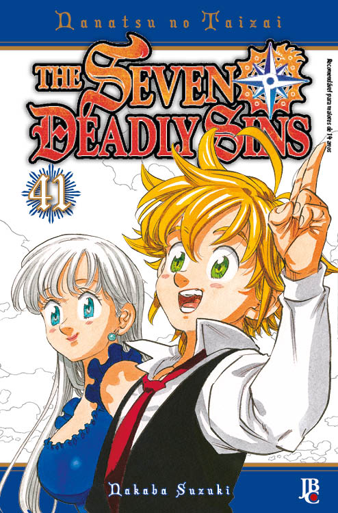

Meus Mangás:
0

Nanatsu no Taizai
Capítulos: 346
Lançamento: 2012
Os Sete Pecados Capitais, um grupo maligno de cavaleiros que conspiram para derrubar o reino de Britânia, supostamente foram erradicados pelos Cavaleiros Divinos, embora ainda existam rumores de que eles estão vivos. Dez anos depois, os Cavaleiros Divinos realizaram um golpe de estado e assassinaram o rei, se tornando os novos tiranos governantes do reino. Elizabeth, a única filha do rei, sai em uma jornada para encontrar os Sete Pecados Capitais, e recrutá-los para que possam ajudar a tomar o reino de volta.